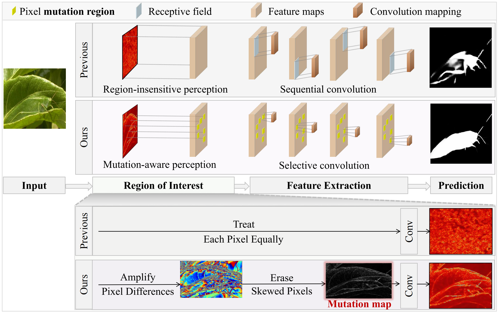

"Hunt Camouflaged Objects via Revealing Mutation Regions", TIFS 2025
作者: 张镡月（博士生），周嘉欢，颜露新，钟胜，邹旭
通讯作者: 邹旭
由于伪装目标与背景之间存在高度相似性，伪装检测中的目标识别常面临目标获取不完整、边界不精细的问题。辅助信息图能够为网络提供额外指引，但现有方法普遍依赖通过附加网络分支生成该信息图。这类方法在训练初期（模型尚未收敛时）难以提供有效指导，从而导致在初期的学习中因缺乏有效的指引信息而受到背景干扰。因此，如何在无需额外训练的条件下构建高效的辅助信息图，并基于此实现伪装目标的有效搜索，成为本文重点关注的问题。
针对上述挑战，本文提出一种无需训练、无需额外传感器的辅助信息图构建方法，用于刻画潜在伪装目标区域，从而在模型初始阶段即引导网络对关键区域产生更强关注。具体而言，我们通过放大并差异化像素的数值与空间位置变化来显式捕获细微的潜在伪装区域获取“突变区图”。基于突变区图，我们进一步提出选择性扩展搜索策略，以构建突变区域与全局特征之间的有效映射，显著降低来自非突变区域背景像素的干扰。随后，将所提特征解码，得到更加精确的分割结果。此外，现有测试集大多集中于自然界固有的伪装样本，而在安防与监控场景下更具现实意义的人造伪装研究仍较为不足。为此，本文对人造伪装的数据进行扩充，构建了目前此领域规模最大的测试集，以推动该方向的研究进展。最后，我们在四个公开数据集（CAMO、COD10K、NC4K、CHAMELEON）及所构建的新的伪装数据集上开展了大量实验，验证了所提基于突变区图与选择性扩张搜索策略的伪装检测方法的有效性。
该论文的第一作者是华中科技大学多谱信息处理技术国家级重点实验室2023级博士生张镡月, 通讯作者是邹旭讲师, 与周嘉欢助理教授合作完成。